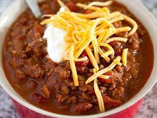

Homemade Chili recipe

Description
Here is my own recipe for Chili, Only thing about this recipe is that there is no exact measurements it is quite a bit of
guesstimating when it comes to seasoning. Other than that here are the ingredients and steps to making my own Chili recipe.
Ingredients
- Ground beef
- chopped onions
- Ground cumin
- Chili powder
- (optional) Cayenne pepper for spice
- salt
- Pepper
- beef broth 1 1/2 cups
- Diced tomatoes (28oz)
- tomato sauce (16oz)
- Red kidney beans
- garlic powder
Steps
- First you are going to put olive oil in the bottom of the pot you are using, then ou will get your chopped onions and throw them in there. After about 5
minutes with the onions go ahead and throw in your ground beef.
- When your meat is all good and cooked this is when you throw in all of your seasonings and tomato paste and stir it all really good
- Now it's time for your diced tomatoes, tomato sauce, and beef broth and you wanna be sure the pot is filled about halfway and just let it sit
and you're pretty much done
- If you want you could throw on some rice to go along with your chili or any toppings you would like.